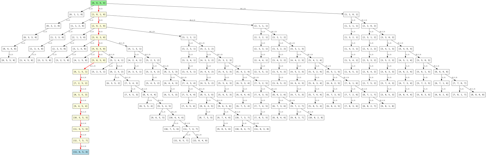

The puzzle involves made-up machines that have a “joltage” setting. Each machine has a set of buttons, you need to figure out the correct order to press those buttons in.
You’re given a puzzle input that looks like this:
(3) (1,3) (2) (2,3) (0,2) (0,1) {3,5,4,7}The machines each have a set of numeric counters tracking its joltage levels, one counter per joltage requirement. The counters are all initially set to zero.
So, joltage requirements like {3,5,4,7} mean that the machine has four counters which are initially 0 and that the goal is to simultaneously configure the first counter to be 3, the second counter to be 5, the third to be 4, and the fourth to be 7.
Each button now indicates which counters it affects, where 0 means the first counter, 1 means the second counter, and so on. When you push a button, each listed counter is increased by 1.
So, a button wiring schematic like (1,3) means that each time you push that button, the second and fourth counters would each increase by 1. If the current joltage levels were {0,1,2,3}, pushing the button would change them to be {0,2,2,4}.
You can push each button as many times as you like. However, your finger is getting sore from all the button pushing, and so you will need to determine the fewest total presses required to correctly configure each machine's joltage level counters to match the specified joltage requirements.
Going off our example: Configuring the first machine's counters requires a minimum of 10 button presses. One way to do this is by pressing (3) once, (1,3) three times, (2,3) three times, (0,2) once, and (0,1) twice.
Your puzzle input a list of machine specifications like the above, the Analyze each machine's joltage requirements and button wiring schematics. What is the fewest button presses required to correctly configure the joltage level counters on all of the machines?
My first solution involved thinking of it as a graph search problem. Each set of “current jotlages” was a node, each button gave you an edge to another node. You simply have to do graph search until you find the correct joltage, and then count the number of steps you are from the origin node. We’ll use breadth-first-search for two reasons:
This uh, does not work! The state space is far too big! For smaller machines with modest targets, BFS can find a solution:
Here’s a small machine it works fine for:
(0,2) (0,1,3) (1,2) {13,8,5,8}

But for machines with larger targets, the state space explodes. After exploring 10,000 states, BFS still hasn’t found the solution:
Machine 0 from problem.txt:
(0,4) (1,3,5) (0,6) (0,2,3,5) (2,5,6) (2,3,5) (0,1,2,4) (0,5) {67,29,30,40,18,54,21}
There are eight buttons, meaning every node has a branching factor of 8. That means by level n we will have explored up to 8n nodes. Since each button press can only increment a joltage counter by one, hitting a target of 67 requires at least 67 button presses—meaning 867 ≈ 1.2 × 1060 nodes to explore. This will not work.
The trick here is this: Each button press is independent - pressing button A then button B has the same effect as pressing B then A. This means we only care about how many times each button is pressed, not the order. Thus, the answer to “how many times do we need to press the button” becomes solving equation:
If button 1 contributes to joltage 1 and 2, And button 2 contributes to joltage 2 and 3 And our target is {1, 3, 2} Then we need to solve:
1 = b1
3 = b1 + b2
2 = b2If we can find the smallest solution to this system of equations This problem is a natural fit for an SMT solver. That turns this into an optimization problem over integers.
For the example input
(3) (1,3) (2) (2,3) (0,2) (0,1) {3,5,4,7}:
Variables: Create one integer variable per button representing how many times we press it:
(declare-const b0 Int) ; button (3)
(declare-const b1 Int) ; button (1,3)
(declare-const b2 Int) ; button (2)
(declare-const b3 Int) ; button (2,3)
(declare-const b4 Int) ; button (0,2)
(declare-const b5 Int) ; button (0,1)Non-negativity: You can’t press a button negative times:
(assert (>= b0 0))
(assert (>= b1 0))
; ... etcJoltage constraints: Each counter’s final value must equal its target. The value is the sum of presses from all buttons that affect that counter:
b4 + b5 = 3b1 + b5 = 5b2 + b3 + b4 = 4b0 + b1 + b3 = 7(assert (= 3 (+ b4 b5)))
(assert (= 5 (+ b1 b5)))
(assert (= 4 (+ b2 b3 b4)))
(assert (= 7 (+ b0 b1 b3)))Final Answer The final answer is just the sum of all the button press counts.
(declare-const answer Int)
(assert (= answer (+ b0 b1 b2 b3 b4 b5)))Minimize total presses: By default, z3 just finds a satisfying answer. In this case, the puzzle requires that we find the smallest number of button presses. We can achieve this by telling z3 to minimize the final answer.
(minimize answer)
(check-sat)
(get-model)(set-logic QF_LIA)
(declare-const b0 Int)
(declare-const b1 Int)
(declare-const b2 Int)
(declare-const b3 Int)
(declare-const b4 Int)
(declare-const b5 Int)
; Button 0: 3
; Button 1: 1 3
; Button 2: 2
; Button 3: 2 3
; Button 4: 0 2
; Button 5: 0 1
(assert (>= b0 0))
(assert (>= b1 0))
(assert (>= b2 0))
(assert (>= b3 0))
(assert (>= b4 0))
(assert (>= b5 0))
; j0 = b4 + b5 = 3
(assert (= 3 (+ b4 b5)))
; j1 = b1 + b5 = 5
(assert (= 5 (+ b1 b5)))
; j2 = b2 + b3 + b4 = 4
(assert (= 4 (+ b2 b3 b4)))
; j3 = b0 + b1 + b3 = 7
(assert (= 7 (+ b0 b1 b3)))
(minimize (+ b0 b1 b2 b3 b4 b5))
(check-sat)
(get-model)Running this with z3 test.smt2 gives us the optimal
solution with 10 total presses.
The Rust solution (src/machine.rs) automates this
process:
build_constraints()The solver handles all the hard work of finding the optimal button press counts.
use crate::temp;
use lalrpop_util::lalrpop_mod;
use lazy_regex::regex;
use std::io::prelude::*;
// Macro nonsense to generate our parser
lalrpop_mod!(pub parser);
// A machine is a
#[derive(Debug, Clone)]
pub struct Machine {
pub buttons: Vec<Vec<usize>>,
pub joltage_target: Vec<usize>,
}
// All the machines in a given problem are just a vector of machines
pub type Machines = Vec<Machine>;
pub fn parse_machines(s: &str) -> Machines {
parser::MachinesParser::new().parse(s).unwrap()
}
impl Machine {
pub fn new(buttons: Vec<Vec<usize>>, joltage_target: Vec<usize>) -> Self {
Self {
buttons,
joltage_target,
}
}
// Compute the answer to the puzzle
pub fn run_solver(&self) -> std::io::Result<usize> {
// Create a temp file to store our constraints in
let mut f = temp::make_temp(".smt2")?;
// Write constraints to file
self.build_constraints(&mut f)?;
// Spawn z3 to solve constraints
let result = std::process::Command::new("z3")
.arg(format!("{}", f.path().display()))
.output()?;
let stdout = String::from_utf8_lossy(&result.stdout);
if stdout.contains("unsat") {
panic!("{} Not satisfiable!", self);
}
// Parse the output using an awful hacky regex
let re = regex!("\\(define-fun answer \\(\\) Int[ \n]+([0-9]+)");
let m = re.captures(&stdout).expect("should have found answer");
let r: usize = m
.get(1)
.expect("should have 1 capture")
.as_str()
.parse()
.unwrap();
Ok(r)
}
// Build the SMT file
pub fn build_constraints(&self, f: &mut impl Write) -> std::io::Result<()> {
// Write logic prelude
// We want to use quantifier-free linear integer arithmatic
writeln!(f, "(set-logic QF_LIA)")?;
let buttons: Vec<_> = (0..self.buttons.len()).map(|i| format!("b{i}")).collect();
// We will have one constant that tracks the amount of times we pushed each button
// The count for each button must be greater than or equal to zero
// (ie: you can't push a button negative times)
for b in buttons.iter() {
writeln!(f, "(declare-const {b} Int)")?;
writeln!(f, "(assert (>= {b} 0))")?;
}
for (i, target) in self.joltage_target.iter().enumerate() {
// A button is "contributing" to joltage i if i effects
// joltage i
let contributing_buttons = self
.buttons
.iter()
.enumerate()
.filter(|(_, b)| b.contains(&i))
.map(|(idx, _)| format!("b{idx}"))
.collect::<Vec<_>>()
.join(" ");
// The sum of all the contributing buttons must be equal to
// the target
writeln!(f, "(assert (= {target} (+ {contributing_buttons})))")?;
}
writeln!(f, "(declare-const answer Int)")?;
writeln!(f, "(assert (= answer (+ {})))", buttons.join(" "))?;
// Epilogue
writeln!(f, "(minimize answer)")?;
writeln!(f, "(check-sat)")?;
writeln!(f, "(get-model)")?;
Ok(())
}
}